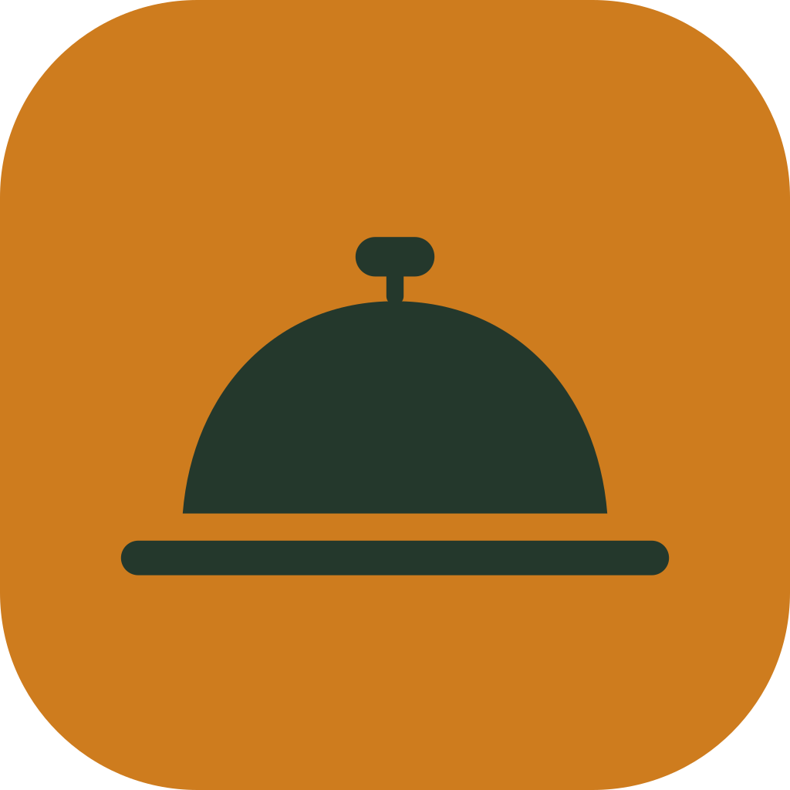
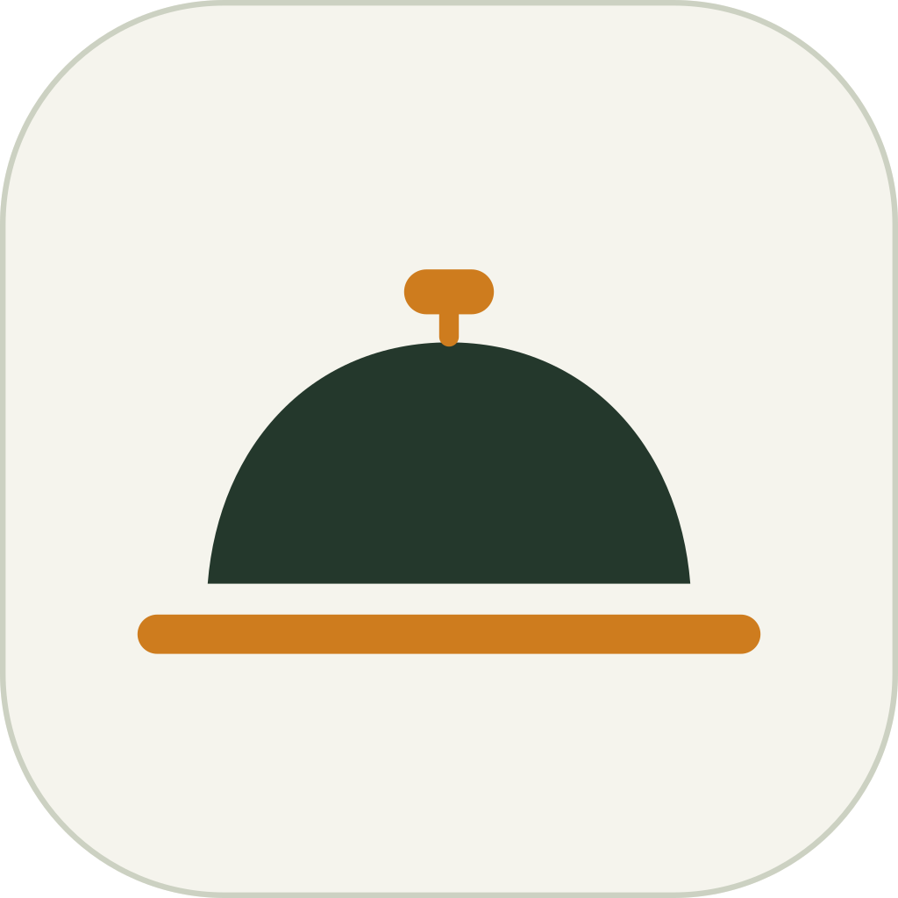

Butlery · Grafisk manual
Version 6 · 25 juli 2026 · ersätter V5 · källa: 00-spec-index.md
Så ser Butlery ut.
Tre färger, en typografi, tre principer ur clochen — och en penna för all ikonografi. Logotypens mått är uppmätta ur master-SVG:n och kontrasterna omräknade. V6 skriver ut vägen mellan tillstånden: kap 11 Interaktion & övergångar specar 35 övergångar i fem flöden och ersätter den planerade klickbara prototypen. V5:s tillskott står kvar: minsta textstorlekar som regel, tokens för knappens och fältets lägen, låsta toppfält och ark, pill-disciplin och kapitlet för tillgänglighet och handoff (kap 10).
01 Logotyp
02 Färg
03 Typografi
04 Formspråk
05 Ikoner
06 Rörelse
07 Komponenter
08 Stresstest
09 Mörkt läge
10 Tillgänglighet
11 Interaktion
12 Kolofon
Status: Godkänd · För granskning · Utkast
01Logotyp & appikon
Märket · Godkänd · Användning · För granskning
Fig 1 · Måttritning — uppmätt ur master-SVG:n
x
x
x
x
x = kupolens höjd (bågen, utan knopp) — frizonmodulen ligger mellan lockup och ram på alla fyra sidor. Master-SVG:n är den enda sanningen; alla mått nedan är mätta ur den, aldrig konstruerade.
Fig 2 · Numerisk låsning — mätvärden vid 92 px ordmärke
Märkets totalhöjd (knopp → linjens underkant)1,00 × versalhöjd
Kupolhöjd (båge = frizonmodul x)0,62 × versalhöjd (41 px)
Tallrikslinje bredd · tjocklek1,09 em · 0,073 em
Linjens centrum under baslinjen0,049 em (4,5 px)
Luftgap båge ↔ linje0,78 × linjetjocklek
Linjens ände → ordmärke0,17 em geometriskt
OrdmärkeSemibold 600 · spärrning −1,5 %
Bågens linjeändarraka, parallella med tallriken
Vikten är 600 per masterfilen — inte 700. Ordmärket är en låst vektor och återskapas aldrig med CSS-text.
Fig 3 · Lockup-familjen — sex officiella
Horisontell · ljus
Horisontell · reversed
Monoline · mörk
Stacked · reversed
Monoline · ljus
Stacked för smala centrerade ytor — aldrig som navigationslogga. Monoline ersätter "enfärgad" — samma teckning som monoline-appikonen (gräddlinje/inklinje, saffransknopp i ljus version): gravyr, enfärgstryck, inne i gränssnittet. Aldrig på saffran; loggan står bara på papper och skog. Riktiga -mono-SVG:er ritas ut från appikonens master.
Fig 4 · Minsta storlekar — i verklig storlek
FULL · MIN 160 PX SKÄRM
22 MM TRYCK
22 MM TRYCK
KOMPAKT · MIN 96 PX
13 MM TRYCKegen ritning tas fram: grövre linje, knopp utan skaft
13 MM TRYCKegen ritning tas fram: grövre linje, knopp utan skaft
MIKRO · MIN 24 PX
ENDAST SYMBOLkupol + linje · ingen knopp
ENDAST SYMBOLkupol + linje · ingen knopp
Fig 5 · Gör inte
✕ SKUGGA
✕ KOMPRIMERING
✕ NYTT FÄRGPAR
✕ PÅ SAFFRAN
Fig 6 · Appikon — familjen
SOLID · MASTER
APP STORE / HEMSKÄRM
APP STORE / HEMSKÄRM
MONOLINE
GRÄDDLINJE · SAFFRANSKNOPP
GRÄDDLINJE · SAFFRANSKNOPP

NEGATIV
GRÖN SYMBOL · SAFFRANSPLATTA
GRÖN SYMBOL · SAFFRANSPLATTA

GRÄDDPLATTA
LJUS VARIANT
LJUS VARIANT
Solid är master och enda hemskärmsikonen. Monoline används för alternativa ikonteman och mörka sammanhang i appen, negativ för kampanj/marknadsytor, gräddplattan för ljusa teman. Minsta storlekar: 64 px full detalj · 48 px utan knoppskaft (per variantarken).
Fig 7 · Plattformsversioner
iOS · KVADRAT
UTAN INBAKAD MASK
UTAN INBAKAD MASK
ANDROID ADAPTIVE
FG 72 % I SAFE AREA
FG 72 % I SAFE AREA
THEMED PREVIEW —
MONO-LAGRET ÄR EN ALFAMASK
MONO-LAGRET ÄR EN ALFAMASK
Exportpaket & namnstandard
butlery-logo-horizontal-light.svg · master
butlery-logo-horizontal-reversed.svg · butlery-logo-stacked-light.svg · butlery-logo-stacked-reversed.svg · butlery-logo-mono-dark.svg · butlery-logo-mono-light.svg
butlery-appicon-ios-1024.png · butlery-appicon-android-fg.svg / -bg.svg · butlery-appicon-android-mono.svg (enfärgad alfamask — inte förhandsvisningen ovan)
SVG är master; PNG genereras, redigeras aldrig.
butlery-logo-horizontal-reversed.svg · butlery-logo-stacked-light.svg · butlery-logo-stacked-reversed.svg · butlery-logo-mono-dark.svg · butlery-logo-mono-light.svg
butlery-appicon-ios-1024.png · butlery-appicon-android-fg.svg / -bg.svg · butlery-appicon-android-mono.svg (enfärgad alfamask — inte förhandsvisningen ovan)
SVG är master; PNG genereras, redigeras aldrig.
02Färg — komplett tokenkarta
För granskning
Varje färg som förekommer i appen har en token — även reversed-ytorna och avatarerna. Kontrastvärdena är omräknade (WCAG relativ luminans) och avrundade nedåt.
Fig 8 · Tokens på papper
TokenVärdeAnvändningKontrast/papper
brand-paper#F5F4EDGrundyta, fält (aldrig #FFF)—
brand-ink#24382CRubriker, ikoner, reversed ytor, standardprimär knapp11,3:1
brand-saffron#CE7C1EHjälte-CTA, valt, fokusriktning — aldrig textfärg2,9:1 · ej text
text-on-saffron#17251DText/ikon på saffran (5,0:1 mot saffran)—
action-primary-pressed#17251DTryckt läge för ink-knappar (samma värde, egen roll)—
text-accent#A15A0AAccenttext, textknappar, länk-hover4,7:1
text-body#37453ABrödtext, avbockade varor (med genomstrykning)9,1:1
text-secondary#627061Stödtext ≥12 px4,7:1
ui-disabled#A9B2A0Inaktiva ytor/konturer — aldrig text, aldrig historik2,0:1 · ej text
border-subtle#CCD1C2Hårstreck, radavdelare — enda hårstrecksfärgen (#DDDDD0 utgår)1,4:1 · dekor
border-control#7D897CFormfält, kryssrutor, sheet-handtag, konturknappar3,3:1 ✓ UI
surface-tonal#E6EAD9Tonplatta — en dominerande tonal region per viewport—
status-success#3F6B4FBock + statustext — aldrig ytor5,5:1
status-warning#8A5212Varning — alltid med ikon5,8:1
status-danger#9C3B23Destruktivt — alltid med ikon eller etikett6,2:1
saffron-pressed#9A5C14Tryckt saffransknapp — samma kulör, mörkare valör. Etiketten är papper #F5F4ED (4,87:1 ✓), aldrig ink: ink på #9A5C14 ger 2,97:1 och är underkänt.ej text
surface-disabled#A9B2A0Inaktiv knappyta med brand-ink text (5,8:1) — opacitet används aldrig som disabled-språk5,8:1
Fig 9 · Tokens på skog (reversed)
text-on-forest#F5F4ED11,3:1
text-on-forest-2nd#93A48D4,7:1 · även inaktiv nav-ikon
brand-saffron#CE7C1E3,9:1 ✓ som yta/indikator, ej text
surface-on-forest#2F4437tonal yta på skog
border-on-forestpapper 18 %linjer på skog
Ingen opacitet som färgmetod utanför border-on-forest — inaktiva ikoner använder text-on-forest-2nd, inte 55 %.
Fig 10 · Avatar-tokens
A
S
M
E
K
Du
avatar-1…5: #24382C · #4A5C43 · #627061 · #B4BFA6 · papper+kontur. Tilldelas stabilt via hash på användar-id — samma person, samma färg, alltid. Initialer ≥4,4:1 mot sin platta. "Du" = saffransring — ingen förväxling med fokus, eftersom saffran aldrig är fokusfärg (Fig 11).
Fig 11 · Fokus per bakgrund & tillstånd
focus-on-light
focus-on-dark
focus-on-saffron
Tryckt
Inaktiv
Vald
Fokus: 2 px ring, 3 px offset — ink på ljust/saffran, papper på mörkt. Saffran är aldrig fokusfärg. Vald = riktig border (ingen box-shadow). Laddning: tallrikslinje-progress — bestämd fylls vänster→höger, obestämd pulserar i opacitet på plats. Knopp-punkterna utgår (samma dekorfälla som listknoppen).
Fig 12 · Primärknapp — beslut: utförande C
Börja laga
Lägg i inköpslistan
Sekundär
Tertiär textknapp
Saffran = vyns hjältehandling, max en, text-on-saffron. Knapptext är 14 px / vikt 600 (inte 700 — undviker "tillgänglighetsanpassad" tyngd); kontrasten 5,0:1 klarar den storleken. Ink = standardprimär, samma 14/600. Destruktiv: kontur i status-danger, fylls först i bekräftelsedialog. Statusfärgerna gäller även på surface-tonal (success 5,0:1, warning 5,2:1, danger 5,6:1 mot #E6EAD9 ✓).
03Typografi
För granskning
DISPLAY · 32/34 · 700Veckans middagarendast sällsynta hero-ögonblick
DISPLAY KOMPAKT · 26/30 · 700God kväll, Malinåterkommande hälsningar & sidhuvuden
RUBRIK · 22/25 · 700Krämig svamppasta
DELRUBRIK · 16/21 · 600Ingredienser till 4 portioner
BRÖDTEXT · 14/22 · 400Skär svampen i skivor och fräs i smör tills gyllene.
TÄT UI · 13/18 · 4002 dl vispgrädde · 400 g färsk pasta · 1 msk timjan
STÖD · 12/17 · 40045 min · 4 portioner · vegetariskt
ETIKETT · 10,5/12 · 700Skafferitumregel: korta kategorier — längre etiketter i versalgemener, aldrig konstlad förkortning
SPECIMEN
Åäö ÅÄÖ 0123456789 − + · : / & « » % ° ½ ★
400 g3 dl1 msk15 min
Tabulära siffror (
font-variant-numeric: tabular-nums) endast där tal radar upp sig i kolumner — mängdlistor, timers, tabeller. I löptext, datum och enstaka tal används proportionella siffror — skälet är jämn läsrytm. Tabulärt krävs i mängdkolumner, timers, progressantal, kolumnställda kod-/OTP-rutor och tabeller. (Motiveringen om den tabulära ettans fot utgår: 0.626-ettan har ingen fot.)Vikter & roller
700 rubriker, etiketter, knappar · 600 delrubriker, mängdsiffror, betoning · 400 löptext. Mellansteg finns inte: 13,5 och 14,5 px utgår — tät UI är 13, brödtext 14. Aldrig 400 under 12 px — regeln gäller även metadata, tider, hjälptext och etiketter i löpande vikt. 10,5 px är tillåtet endast i vikt 700 för etiketter och navigation; under 10,5 px finns ingen nivå. Säkerhets-, allergi- och samtyckestext sätts 12,5–13 px i text-primary #24382C och får aldrig tonas ned.
Knappar: 14/600 (alla nivåer) · Mängder: Tät UI 600 tabulär, högerställda · Flikar: 13/700 versalgemener · Nav-etikett: 11 (höjd från 10,5 — kökskontext) · Fel: Tät UI 600 status-danger + ikon.
Ordmärket är en låst vektor — aldrig satt med CSS.
Knappar: 14/600 (alla nivåer) · Mängder: Tät UI 600 tabulär, högerställda · Flikar: 13/700 versalgemener · Nav-etikett: 11 (höjd från 10,5 — kökskontext) · Fel: Tät UI 600 status-danger + ikon.
Ordmärket är en låst vektor — aldrig satt med CSS.
Dynamisk typ
Hela skalan följer systemets textskalning utan tak. Vid skalning omformas layouten: knappar får flexibel höjd och bryter till två rader (primärhandlingar trunkeras aldrig); recepttitlar får växa förbi två rader; rader staplas hellre än klipper. Trunkering (max 2 rader + …) gäller endast vid 100 %.
Dokumentskala
Manualer/marknadsföring: 64/1,0 hero · 30/1,1 kapitel · i övrigt appskalan. Denna manual är satt i den.
04Formspråk — tre principer ur clochen
För granskning
i. Tallrikslinjen
Tre betydelser: aktiv (flik/nav — 3 px, ordets bredd + 5 px överhäng per sida) och progress (4 px, rundade ändar, spår i surface-tonal, n steg). Avsnittsindexet är utbrutet till en egen redaktionell komponent — knopp-linjen, Fig 12b. Aldrig under rubriker som dekor.
ii. Kupolen
Hela bågen, aldrig beskuren, aldrig vattenmärke, maskar aldrig mat. Endast tomlägen, onboarding, marknadsföring — högst en per varumärkesögonblick. Receptfoton är redaktionellt rektangulära.
under
genom
Aapå plats
iii. Lyftprincipen
Innehåll framträder uppåt genom en fast baslinje — texten är klippt under linjen tills den står på plats. Statiskt: rubriker och nyckeltal står på sin regel (regeln under sista raden = fel, det läses som understrykning).
Fig 12b · Knopp-linjen — redaktionell signatur
knopp 22×4· luft 141 px flexibel linje
lågmäld variant · linje i border-subtle
på skog · knopp saffran, linje border-on-forest
Anatomi: saffransknopp 22 × 4 px (radie 2), 14 px luft, 1 px linje som fyller ut till innehållsgriddens högerkant. Vänsterkanten låses till griddens vänsterkant — aldrig centrerad.
Egen komponent — inte en tallrikslinjeroll. Knopp-linjen är Butlerys redaktionella signatur: hela märket (knopp + tallrik) abstraherat till två streck.
Placering: omslag/masthead, början av huvudkapitel, redaktionell faktaruta, tydliga varumärkesögonblick (onboarding, tomläge, Om Butlery).
Frekvens: högst en per sida/vy, endast vid verklig huvudövergång — aldrig upprepad per kort eller sektion.
I appen: funktionella vyer använder tallrikslinjen (aktiv/progress); knopp-linjen endast i redaktionella/brandade ytor.
Aldrig: som tabindikator, under vanlig rubrik, i listor, centrerad, med skugga, som laddare eller i andra färgpar.
Placering: omslag/masthead, början av huvudkapitel, redaktionell faktaruta, tydliga varumärkesögonblick (onboarding, tomläge, Om Butlery).
Frekvens: högst en per sida/vy, endast vid verklig huvudövergång — aldrig upprepad per kort eller sektion.
I appen: funktionella vyer använder tallrikslinjen (aktiv/progress); knopp-linjen endast i redaktionella/brandade ytor.
Aldrig: som tabindikator, under vanlig rubrik, i listor, centrerad, med skugga, som laddare eller i andra färgpar.
05Ikoner — en penna, hela appen
Godkänd · familj låst
Beslut: all ikonografi i appen specialritas — inte bara de Butlery-specifika. En penna garanterar enhetlighet; inga inköpta bibliotek blandas in. Grundikoner är enfärgade i ink; saffran tillkommer genom tillstånd, aldrig inritad. Familjen är låst, ritad och inbytt i alla appvyer — samtliga 47 gränssnittsglyfer är omritade på 24-rutnätet med stroke 1,75 (2,2 för bock/kryss i täta ytor), runda ändar och hörn; platshållarmärkningen är borttagen. Inventeringen är normativ i
icons.json — namn, rutnät, stroke och leveransstatus per glyf; manualen visar dem, manifestet räknar dem. Nedladdning och export är två skilda glyfer med skild semantik. Nav-familjen ligger kvar på 160-rutnätet med stroke 7.Fig 13 · Verklig storlek + kontext
24 · 1,75
20 · 1,9
16 · 2,1
Lägg till
Master = redigerbar stroke-SVG; outlined SVG är leveransformat. I appen renderas ikoner med
currentColor. Varje ikon specificeras med namn, betydelse, tillåtna sammanhang och tillgänglig etikett (får den stå utan text?).Spec
Raster 24×24, live area 20×20 · enhetlig stroke 1,75 från 15 px och uppåt · 2,2 vid 14 px och nedåt — en enda kompensationsnivå, inga mellanvikter. Fyllda glyfer (stjärnbetyg, kebab, draghandtag, play) ritas utan stroke. Listradschevron är 12 px; åtgärdsikoner aldrig under 12 px.
Rundade ändar OCH hörn (round cap + join) på hela familjen. Undantag: clochens båge — raka ändar parallella med tallriken.
Nav-familjen ritas på 160-rutnät, stroke 7 (hem/veckoplan/plus/inköp/mer) och är den bindande vikt-referensen; övriga ikoner optiskt balanserade mot den.
Pixeljusterat, streck centrerat, viewBox 0 0 24 24,
Rundade ändar OCH hörn (round cap + join) på hela familjen. Undantag: clochens båge — raka ändar parallella med tallriken.
Nav-familjen ritas på 160-rutnät, stroke 7 (hem/veckoplan/plus/inköp/mer) och är den bindande vikt-referensen; övriga ikoner optiskt balanserade mot den.
Pixeljusterat, streck centrerat, viewBox 0 0 24 24,
currentColor.Användningsregler
Fyllnad vs kontur: monoline (fill:none) som norm. Fylld endast där konventionen kräver det — stjärnbetyg, ⋮-prickar, video-play, samt små accent-detaljer (info-prick, kamera-sökare).
Aktiv/inaktiv: nav och toggles — aktiv #F5F4ED, inaktiv #93a48d; ikon och etikett delar samma tillståndsfärg.
Träffytor: fristående ikonknappar ≥ 48 × 48 dp (list-/knapprader räknas som ytan).
Siffror: proportionella (pnum) i text/metadata; tabular-nums endast i mängd-, timer- och sifferkolumner.
Aktiv/inaktiv: nav och toggles — aktiv #F5F4ED, inaktiv #93a48d; ikon och etikett delar samma tillståndsfärg.
Träffytor: fristående ikonknappar ≥ 48 × 48 dp (list-/knapprader räknas som ytan).
Siffror: proportionella (pnum) i text/metadata; tabular-nums endast i mängd-, timer- och sifferkolumner.
Inventering — familj låst
Nav (160/7): hem · veckoplan (kalender+cloche) · plus (central) · inköp (vagn) · mer Status: bock · bock-i-ring · sköld · varning · info · fel (kryss-i-ring — endast status; åtgärden stäng/ta bort ritas som bart kryss) Åtgärder: sök · kopiera · ladda ner · länk · dokument · mapp · arkivera · visa · uppdatera · spela · kebab (⋯) · sortera · dela (pil-ut) · vidarebefordra · redigera (penna) · papperskorg · kamera · filter · chevron · bakåt Personer: profil · personer · kuvert · chatt Övrigt/brand: cloche · nål (fastnålade) · kugghjul · blixt · statistik · lås · offline · betyg-stjärna · timer · hjärta · portion ± · veg/gluten/laktos
Fig 14 · Familjen — låsta glyfer
Nav · 160-rutnät, stroke 7
HemVeckoplanPlusInköpMer
Åtgärder · 24-rutnät, stroke 1,75
SökKopieraLadda nerLänkDokumentMappArkiveraVisaUppdateraSpelaKebabSorteraDelaVidarebef.RedigeraTa bortKameraFilterChevronBakåt
Status · 24-rutnät, stroke 1,75
BockBock-ringSköldVarningInfoStäng
Personer · 24-rutnät, stroke 1,75
ProfilPersonerKuvertChatt
Övrigt & brand · 24-rutnät, stroke 1,75
NålKugghjulBlixtStatistikLåsOfflineBetygTimerHjärtaCloche
06Rörelse
För granskning
Fig 14b · Två ceremonier — samma lock, samma hand
Uppdukningen · 5 sendast startskärmen. Locket vinklas av och lämnar bilden, rätten avslöjas med ånga, märket sätts tillbaka. Loopar under kallstarten och slutar alltid i vila — appen väntar aldrig på den.
Clochelyftet · 400 msi appen. Locket tippar och återgår — lämnar aldrig bilden, blankar aldrig ut märket, avslöjar ingen mat. Två tillfällen: onboardingens slut (ersätter "första receptöppningen") och första gången veckan når 7/7.
Aldrig blandadeUppdukningen förekommer inte inuti appen och clochelyftet inte på startskärmen. Det är två ceremonier, inte två längder av samma.
Avbockad lista: mikrobekräftelse (bock + 8 px lyft). Vardag: ≤ 12 px förskjutning + toning enligt lyftprincipen.
Banorna är låsta (rörelsereferensen Butlery ceremonier). Gemensamt: rotationscentrum 43 · 104 i märkets 160-rutnät och medurs riktning — locket vinklas av uppåt-höger i båda, annars läser de som två olika föremål. Maskkant y = 113. Förflyttningen anges i lockets egna led (rotation före förflyttning, som CSS-transformlistan i startskärmen); nettot i märkets rutnät står inom parentes.
Uppdukningen: 0 → +20° / (−5 · −34) = (+6,9 · −33,7) → +34° / (−12 · −64) = (+25,8 · −59,8), därefter ute ur bild; rätten tonar in vid halva cykeln, aldrig före locket är av; ångan följer rätten. 5 s, loopar, slutar i vila.
Clochelyftet: toppläge +6° och lokal förflyttning (+2 · −16) = (+3,7 · −15,7), kupolen behåller full opacitet; 400 ms in (0,3 0 0,15 1) och 200 ms ut (0,4 0 1 1); ångan stiger ur springan mellan kupolkant och tallrik efter 55 % av lyftet, aldrig vid knoppen.
Banorna är låsta (rörelsereferensen Butlery ceremonier). Gemensamt: rotationscentrum 43 · 104 i märkets 160-rutnät och medurs riktning — locket vinklas av uppåt-höger i båda, annars läser de som två olika föremål. Maskkant y = 113. Förflyttningen anges i lockets egna led (rotation före förflyttning, som CSS-transformlistan i startskärmen); nettot i märkets rutnät står inom parentes.
Uppdukningen: 0 → +20° / (−5 · −34) = (+6,9 · −33,7) → +34° / (−12 · −64) = (+25,8 · −59,8), därefter ute ur bild; rätten tonar in vid halva cykeln, aldrig före locket är av; ångan följer rätten. 5 s, loopar, slutar i vila.
Clochelyftet: toppläge +6° och lokal förflyttning (+2 · −16) = (+3,7 · −15,7), kupolen behåller full opacitet; 400 ms in (0,3 0 0,15 1) och 200 ms ut (0,4 0 1 1); ångan stiger ur springan mellan kupolkant och tallrik efter 55 % av lyftet, aldrig vid knoppen.
Fig 15 · Tempo & kurvor
180ms
mikrorespons · linjär
320ms
intåg · (0.33, 0, 0.2, 1)
200ms
utgång · (0.4, 0, 1, 1)
400ms
ceremoni · (0.3, 0, 0.15, 1)
180/320 matchar appens befintliga implementation (v10) — v3:s 120/280 återställda och noterade i kolofonen. Animation fördröjer aldrig navigation; ett element blir interaktivt först när det är ≥ 80 % synligt (inget osynligt klickbart). Allt avbrytbart och vändbart. prefers-reduced-motion: omedelbart byte, ceremonier som stillbild.
07Yta & komponenter
Utkast
Grid & spacing
320 px: 20 px layoutmarginal (egen token utanför skalan) · 360–430 px: 24 · tablet: två kolumner där innehållet bär det (t.ex. ingredienser + instruktioner), annars max 600 px centrerat · safe areas alltid.
Referensenhet: Pixel 9a — 412 × 924 dp. Huvudmockuper ritas i 412 och verifieras på fysisk enhet i normal text-/visningsstorlek; gränssnittet stresstestas vid 360 och 320.
Skala: 4 / 8 / 12 / 16 / 24 / 32 + layoutmarginal 20.
Alla kantade ytor med fast mått är border-box — 48 dp betyder 48 dp inklusive kant.
Låst kontrollgeometri: kryssruta 24 px med radie 6 (beslut B-37 — 24 är bruket, 20 var rutnätet) · radio 19 px · toggle 34 × 20 med knopp 16 · chip 12/600 padding 7 × 13 (kompakt chip i fält 6 × 11 är enda undantaget) · statuspill 10,5/700 padding 3 × 9 · badge padding 2 × 7 · avatarskala 26 / 32 / 40 / 54 / 72 utan mellansteg (stackens 2 px pappersram ger ytterdiameter 30).
Träffyta minst 48 × 48 dp — synligt mindre kontroller (40 px-knapp, 28 px-stepper, 20 px-kryssruta, chips) får en 48 dp-wrapper som ska finnas i koden, inte bara i den här texten. Fokusramen ritas runt hela wrappern, aldrig runt bara glyfen. Varje komponent deklarerar tre mått: visuell storlek · hitbox · avstånd till närmaste hitbox (≥ 8 dp).
Referensenhet: Pixel 9a — 412 × 924 dp. Huvudmockuper ritas i 412 och verifieras på fysisk enhet i normal text-/visningsstorlek; gränssnittet stresstestas vid 360 och 320.
Skala: 4 / 8 / 12 / 16 / 24 / 32 + layoutmarginal 20.
Alla kantade ytor med fast mått är border-box — 48 dp betyder 48 dp inklusive kant.
Låst kontrollgeometri: kryssruta 24 px med radie 6 (beslut B-37 — 24 är bruket, 20 var rutnätet) · radio 19 px · toggle 34 × 20 med knopp 16 · chip 12/600 padding 7 × 13 (kompakt chip i fält 6 × 11 är enda undantaget) · statuspill 10,5/700 padding 3 × 9 · badge padding 2 × 7 · avatarskala 26 / 32 / 40 / 54 / 72 utan mellansteg (stackens 2 px pappersram ger ytterdiameter 30).
Träffyta minst 48 × 48 dp — synligt mindre kontroller (40 px-knapp, 28 px-stepper, 20 px-kryssruta, chips) får en 48 dp-wrapper som ska finnas i koden, inte bara i den här texten. Fokusramen ritas runt hela wrappern, aldrig runt bara glyfen. Varje komponent deklarerar tre mått: visuell storlek · hitbox · avstånd till närmaste hitbox (≥ 8 dp).
Form, linje & lager
Radier: 0
Linjer: 1 px border-subtle (hårstreck) · 1 px ink (sektionsregel) · 1 px border-control (kontroller) · 1,5 px ink (kontur-kant: sekundärknapp, vald chip).
Noll skugga. Flytande lager: scrim rgba(36,56,44,0.4) + 1 px kontrastkant.
sharp tabeller/redaktionellt · 2 knob ordmärkets knopp och tunna staplar · 8 control knappar/fält · 12 card kort/sheets · full pill chips/avatarer.Linjer: 1 px border-subtle (hårstreck) · 1 px ink (sektionsregel) · 1 px border-control (kontroller) · 1,5 px ink (kontur-kant: sekundärknapp, vald chip).
Noll skugga. Flytande lager: scrim rgba(36,56,44,0.4) + 1 px kontrastkant.
Knappar
Höjd 46–48 (kompakt 40 synlig + 44-wrapper) · minbredd 96 · ikon 16–20 px vänster, 7–8 px gap.
Text 14 px / vikt 600 genom alla nivåer (saffran, ink, kontur, text) — aldrig 700, som läser som tillgänglighetsläge. Föredra sida-vid-sida framför staplade fullbreddsknappar. Primärtext trunkeras aldrig — flexibel höjd vid textskalning.
Laddning: tallrikslinje-progress i knappens underkant.
Text 14 px / vikt 600 genom alla nivåer (saffran, ink, kontur, text) — aldrig 700, som läser som tillgänglighetsläge. Föredra sida-vid-sida framför staplade fullbreddsknappar. Primärtext trunkeras aldrig — flexibel höjd vid textskalning.
Laddning: tallrikslinje-progress i knappens underkant.
Fig 16 · Kontroller — i 280 px innehållsbredd
Sök recept eller ingrediens…
VegetarisktUnder 30 minBarnvänligt
Kryssruta (48 dp-wrapper)
Ange minst en ingrediens
Fält: papper + border-control (aldrig #FFF). Chips wrappar — ingen dold horisontell scroll i filterrader. Toggle: ink = på. Fel: Tät UI 600 + ikon. Radio/segmented/disabled field följer samma delar; specas per komponent i UI-kitet.
Fig 17 · Bottom sheet
Handtag i border-control (affordance, inte dekor). Scrim + kontrastkant ger lagerseparationen — ingen skugga.
Toppfält — fyra giltiga mönster
1 · Rotnivå: sidtitel i Display kompakt, ingen bakåtpil, åtgärder till höger i 48 dp-ytor.
2 · Undersida: bakåtpil + titel i 14/700, titeln trunkeras aldrig till obegriplighet — korta hellre texten och lägg detaljen som sekundärrad.
3 · Mediehero: bild/tonplatta med överlagrade ikonknappar i pappersringar; titeln står under heron, aldrig ovanpå maten.
4 · Modal/ark: X för modal, handtag för ark — aldrig båda. Ark har alltid 12 px överkant, handtag i border-control och rak nederkant.
Inga andra varianter. Samma mönster gäller grupp-, vän- och publika profiler.
2 · Undersida: bakåtpil + titel i 14/700, titeln trunkeras aldrig till obegriplighet — korta hellre texten och lägg detaljen som sekundärrad.
3 · Mediehero: bild/tonplatta med överlagrade ikonknappar i pappersringar; titeln står under heron, aldrig ovanpå maten.
4 · Modal/ark: X för modal, handtag för ark — aldrig båda. Ark har alltid 12 px överkant, handtag i border-control och rak nederkant.
Inga andra varianter. Samma mönster gäller grupp-, vän- och publika profiler.
Knappens och fältets lägen — tokens
Knapp: vila → pressed (saffran #9A5C14 · papper #F5F4ED · kontur på surface-tonal) → loading (tallrikslinje i underkanten, aldrig spinner) → disabled (surface-disabled + brand-ink text). Destruktiv är kontur i normalläge och fylls först i bekräftelsedialog. Kontur är alltid 1,5 px.
Fält: vila och validerat i border-control 1 px · fel i 1,5 px status-danger + text och ikon · disabled i surface-tonal med 1 px ui-disabled-kant och läsbar text · fokus är ringen (2 px/3 px offset), kanten byter aldrig tjocklek.
Varje läge levereras som maskinläsbart tillstånd, inte bara som färg.
Fält: vila och validerat i border-control 1 px · fel i 1,5 px status-danger + text och ikon · disabled i surface-tonal med 1 px ui-disabled-kant och läsbar text · fokus är ringen (2 px/3 px offset), kanten byter aldrig tjocklek.
Varje läge levereras som maskinläsbart tillstånd, inte bara som färg.
Pill-disciplin
Pills är kompakta val och verkliga statusmarkörer — inget annat. Struktur bärs av regler, listor och textflikar.
Använd pill: taggar, 2–3 prioriterade filter, status som outline-pill + ikon/ord.
Använd inte pill: långa allergen- och köksval (krysslista i två kolumner), behörighet (segment), personer (avatarrader), räknare (siffra på regel).
Valt läge visas alltid med bock — aldrig med fyllnad eller kant som enda signal. Max en pillgrupp per skärmavsnitt.
Använd pill: taggar, 2–3 prioriterade filter, status som outline-pill + ikon/ord.
Använd inte pill: långa allergen- och köksval (krysslista i två kolumner), behörighet (segment), personer (avatarrader), räknare (siffra på regel).
Valt läge visas alltid med bock — aldrig med fyllnad eller kant som enda signal. Max en pillgrupp per skärmavsnitt.
08Stresstest — appens verkliga skärmar i 320 px
Utkast
Byggda efter appens låsta mönster: receptdetaljens flik/portions-header, mängd–namn–skafferi-kolumnerna, femdelad navigation med central plus. Alla färger ur tokenkartan, alla kontroller med 48 dp-träffytor.
RECEPTFOTO
Lagat 3 ggr
Krämig svamppasta med timjan
från koket.se · importerad 2 maj
45 min·4 portioner
★★★★★ 4,5 · 27 betyg
Familjen 4,3
Ingredienser
Gör så här
−4+
I SKAFFERIET
400 gfärska champinjonerSaknas
3 dlgrädde5 dl
400 gpasta200 gDelvis
2 stvitlöksklyftor4 st
50 gparmesan, rivenSaknas
Börja laga
Inköp · 2
HemMenyInköpMer
Veckomeny
Vecka 28 · 5 rätter
Beskriv veckan — "3 vegetariska, tacos på fredag" …
Butlern planerar utifrån skafferietGenerera
Vecka 287–13 juli
Mån—
TisLaxpudding med dill
OnsKikärtscurryNY
TorsKrämig svamppastaIKVÄLL
FreTacos på svartbönor
LörHelstekt blomkålNY
Sön+ planera
Till inköpslistan5 rätter → 18 varor
HemMenyInköpMer
Inköp
Veckans inköp · 4 av 16 klara
Listor
Skafferi
Grönt & frukt1/4
Champinjoner 400 gSvamppastan
Färsk timjan 1 kruka
Citron 2 st
Mejeri0/3
Grädde 3 dlSvamppastan
Parmesan 1 bit
Köpt (4)Rensa köpta
Pasta 400 g
Gul lök 2 st
HemMenyInköpMer
Byggda 1:1 mot v10:s receptdetalj, veckomeny och inköp — samma struktur och innehåll (skafferikolumn "I skafferiet", promptgenerering, kategoriförlopp, köpt-sektion), översatta till manualens tokens: saffran #CE7C1E med text-on-saffron (vila) och papper på pressed, success/warning ur statusskalan, tallrikslinje under aktiv nav (ersätter v10:s topplinje i #E09D50), central plus med pappersring utan skugga, avbockat i text-body + genomstrykning (ingen opacitet), tabulära siffror endast i mängdkolumner.
09Mörkt läge
För granskning
Mörkt läge är fasta tokens, inte transformering — v10:s heuristiska färgmappning utgår. Tre mörka ytnivåer ersätter papper/tonal; saffran förblir yta, aldrig text. Alla kontraster nedan är WCAG-beräknade mot respektive yta.
Fig 18 · Mörka tokens — kontrast mot dark-surface
dark-bg#17251Dgrundyta (= text-on-saffron)
dark-surface#24382Ckort, nav, ark (= brand-ink)
dark-tonal#2F4437tonplatta (= surface-on-forest)
text-dark-primary#F5F4ED11,3:1
text-dark-secondary#93A48D4,7:1 · ej på tonal
text-accent-dark#E09D505,4:1
brand-saffron#CE7C1E3,8:1 ✓ yta, ej text
status-success-dark#8FB89A5,6:1
status-warning-dark#DCA9685,9:1
status-danger-dark#DE90785,0:1
ui-disabled-dark#4A5C501,8:1 · aldrig text
border-on-darkpapper 18 %hårstreck & kontrastkant
Regler
Ytnivåer: bg → surface → tonal; separation med border-on-dark, aldrig skugga (noll skugga gäller även mörkt).
Saffran är oförändrad #CE7C1E och förblir vyns hjältehandling med text-on-saffron #17251D. Accenttext på mörkt är text-accent-dark — aldrig saffran som text.
Sekundärtext får inte stå på dark-tonal (4,0:1) — lyft till primär eller flytta av plattan.
Status följer ljusa lägets regler (ikon/etikett, aldrig ytor) med -dark-varianterna.
Inverslogik: reversed-ytor (nav, kvällsband) är redan mörka och behåller sina tokens — de "inverteras" inte en gång till.
Fokus: papper-ring 2 px / 3 px offset på alla mörka ytor.
Ordmärke/logotyp: reversed-lockupen. Appikon: monoline-varianten.
Saffran är oförändrad #CE7C1E och förblir vyns hjältehandling med text-on-saffron #17251D. Accenttext på mörkt är text-accent-dark — aldrig saffran som text.
Sekundärtext får inte stå på dark-tonal (4,0:1) — lyft till primär eller flytta av plattan.
Status följer ljusa lägets regler (ikon/etikett, aldrig ytor) med -dark-varianterna.
Inverslogik: reversed-ytor (nav, kvällsband) är redan mörka och behåller sina tokens — de "inverteras" inte en gång till.
Fokus: papper-ring 2 px / 3 px offset på alla mörka ytor.
Ordmärke/logotyp: reversed-lockupen. Appikon: monoline-varianten.
Demonstration
Ikväll · 45 min
Krämig svamppasta
4 portioner · allt i skafferiet
Börja lagaByt rätt
10Tillgänglighet & handoff
För granskning · testbara regler, inte ambitioner
Kapitlet finns för att v4:s ambitioner om dynamisk typ, fokus och rörelse inte gick att verifiera i skärmarna. Allt nedan är leveranskrav på komponenten — inte en teknisk gissning i implementationen. Butlerys nivå ligger medvetet över WCAG 2.2 AA där appen används med kladdiga händer i ett kök.
Fokus — hela systemet
2 px ring, 3 px offset — ink på ljust och saffran, papper på mörkt. Saffran är aldrig fokusfärg.
Fokusläge ska visas i komponentarket för: ikonknappar, bottennavigation, flikar, segment, chips, stjärnbetyg, kryssrutor, toggles, portionssteg, menyval, dialogknappar och sheet-rader.
Sticky bottennav, fasta CTA-rader, snackbars, ark och kontextmenyer får aldrig helt täcka det fokuserade elementet — innehållet får extra bottenluft i stället.
Lager: vid öppning flyttas fokus in i lagret, hålls kvar där, stängs med Escape/bakåt och återgår till utlösaren.
Fokusläge ska visas i komponentarket för: ikonknappar, bottennavigation, flikar, segment, chips, stjärnbetyg, kryssrutor, toggles, portionssteg, menyval, dialogknappar och sheet-rader.
Sticky bottennav, fasta CTA-rader, snackbars, ark och kontextmenyer får aldrig helt täcka det fokuserade elementet — innehållet får extra bottenluft i stället.
Lager: vid öppning flyttas fokus in i lagret, hålls kvar där, stängs med Escape/bakåt och återgår till utlösaren.
Träffytor
48 × 48 dp är Butlerys standard (Android-golv och referensenhet Pixel 9a); iOS-golvet 44 × 44 pt uppfylls automatiskt. WCAG 2.2 AA:s 24 × 24 är ett webbgolv och används aldrig som native-standard. Appen är touch-first och används med kladdiga händer under matlagning — 48 är minimum, inte mål.
Synligt mindre kontroller (20 px kryssruta, 28 px stepper, chips, 36 px ikonknapp) får en deklarerad osynlig 48 dp-wrapper. Wrappern ska framgå av komponenten och av skärmreferensen — annars implementeras det synliga måttet som träffyta. Varje komponent anger tre mått: visuell storlek, hitbox och avstånd till närmaste hitbox (≥ 8 dp). Är raden träffytan ska raden markeras som kontroll i komponenten — inte bara i manualtexten.
Synligt mindre kontroller (20 px kryssruta, 28 px stepper, chips, 36 px ikonknapp) får en deklarerad osynlig 48 dp-wrapper. Wrappern ska framgå av komponenten och av skärmreferensen — annars implementeras det synliga måttet som träffyta. Varje komponent anger tre mått: visuell storlek, hitbox och avstånd till närmaste hitbox (≥ 8 dp). Är raden träffytan ska raden markeras som kontroll i komponenten — inte bara i manualtexten.
Dynamisk typ, omflöde, orientering
Skalning utan tak. Per komplex vy specificeras: vad som scrollar, vad som får stapla och vilka bottenåtgärder som förblir fasta.
Verifieras: 200 % textförstoring utan förlorat innehåll · omflöde vid 320 px utan dubbelriktad scroll · användarstyrd textrytm (radavstånd 1,5× · stycke 2× · tecken 0,12× · ord 0,16×) · både stående och liggande. Ingen vy låses till en orientering av layoutskäl — matlagningsläget behöver en stående variant där ingredienser och steg staplas.
Verifieras: 200 % textförstoring utan förlorat innehåll · omflöde vid 320 px utan dubbelriktad scroll · användarstyrd textrytm (radavstånd 1,5× · stycke 2× · tecken 0,12× · ord 0,16×) · både stående och liggande. Ingen vy låses till en orientering av layoutskäl — matlagningsläget behöver en stående variant där ingredienser och steg staplas.
Namn, roller och tillstånd
Varje ikonknapp och egenbyggd kontroll levereras med benämning, roll, aktuellt värde/tillstånd, läsordning och besked om ikonen är informativ eller dekorativ. Gäller särskilt bakåt, stäng, favorit, ladda ned, kebab, plus/minus, stjärnbetyg, flikar, portionsväljare och kryssrutor.
Den tillgängliga benämningen innehåller samma ord som en synlig etikett. Visa/dölj-knappar skiftar benämning och exponerar tryckt läge. Dekorativa SVG:er döljs för hjälpmedel.
Tillstånd (vald, tryckt, laddar, inaktiv) är maskinläsbara — färg och opacitet räcker aldrig.
Den tillgängliga benämningen innehåller samma ord som en synlig etikett. Visa/dölj-knappar skiftar benämning och exponerar tryckt läge. Dekorativa SVG:er döljs för hjälpmedel.
Tillstånd (vald, tryckt, laddar, inaktiv) är maskinläsbara — färg och opacitet räcker aldrig.
Status som annonseras
“Sparat”, “Offline”, “Importerar”, fel, snackbars och ändrat antal varor annonseras utan att flytta fokus. Snackbar = status eller varning efter allvar; dess åtgärd är ett riktigt fokuserbart mål.
Nedräkningar annonseras när åtgärden blir tillgänglig — inte varje sekund. Dekorativa progressrörelser annonseras inte; stegbytet (Hämtar → Analyserar → Skapar) annonseras en gång per steg.
Aldrig endast färg: skafferimängder, matchprocent, betyg och diagram kombineras med ord eller symbol (“Finns · 5 dl”, “Delvis”, “Saknas”). Diagram använder den gröna avatar-/dataskalan, aldrig status-success/danger som datafärger.
Nedräkningar annonseras när åtgärden blir tillgänglig — inte varje sekund. Dekorativa progressrörelser annonseras inte; stegbytet (Hämtar → Analyserar → Skapar) annonseras en gång per steg.
Aldrig endast färg: skafferimängder, matchprocent, betyg och diagram kombineras med ord eller symbol (“Finns · 5 dl”, “Delvis”, “Saknas”). Diagram använder den gröna avatar-/dataskalan, aldrig status-success/danger som datafärger.
Dragning, media, autentisering
Dragning har alltid ett enkelt alternativ: “Flytta upp”, “Flytta ned” och vid behov “Flytta till position …” i radens åtgärdsmeny, tillgängligt för pekare och tangentbord. Draghandtaget är en genväg, aldrig enda vägen.
Media: receptbild får kort textalternativ när den hjälper igenkänning, annars tomt · fotograferade receptsidor kräver maskinläsbar transkription efter import · avatar intill namn är dekorativ · tomlägesillustrationer och logotypdelar döljs · kamera och uppladdning har textetiketter, inte bara ikon.
Autentisering: lösenordsfält tillåter inklistring och lösenordshanterare. OTP är ett logiskt fält — hela koden kan klistras in eller autofyllas och en siffra kan rättas utan att fastna mellan sex fokuslägen.
Media: receptbild får kort textalternativ när den hjälper igenkänning, annars tomt · fotograferade receptsidor kräver maskinläsbar transkription efter import · avatar intill namn är dekorativ · tomlägesillustrationer och logotypdelar döljs · kamera och uppladdning har textetiketter, inte bara ikon.
Autentisering: lösenordsfält tillåter inklistring och lösenordshanterare. OTP är ett logiskt fält — hela koden kan klistras in eller autofyllas och en siffra kan rättas utan att fastna mellan sex fokuslägen.
Rörelse — global reducerad variant
prefers-reduced-motion är en global regel, inte en anteckning på två vyer: clochelyft, obestämd tallrikslinje, skelettlägen, arkövergångar och listbekräftelser byter till omedelbar eller diskret övergång.
Rörelse bär aldrig information som saknas i slutläget · inget blinkande eller pulserande som drar uppmärksamhet · clochelyftet är aldrig den enda laddningsindikationen (tallrikslinjen + text bär den) · skelett står stilla, ingen shimmer.
Rörelse bär aldrig information som saknas i slutläget · inget blinkande eller pulserande som drar uppmärksamhet · clochelyftet är aldrig den enda laddningsindikationen (tallrikslinjen + text bär den) · skelett står stilla, ingen shimmer.
Godkännandeprov före implementation
412 · 360 · 320 CSS-px · 200 % text · användarstyrd textrytm · stående och liggande · tangentbord och skärmläsare · Pixel 9a med verkliga systeminställningar. Ingen vy godkänns på stillbild.
Butlery Sans — status 0.626
Versalt I har den godkända C-ettans korta tvärstreck upptill och nedtill; gement l är rak stam och 1 är orörd. Paret I/l/1 är därmed avkodbart vid 11–13 px och det tidigare “imposter character”-felet är stängt. Testord vid varje fontleverans: Illustrate · Ill 11 · 1 dl i 400/600/700 på fysisk enhet.
0.626 — sex statiska stilar. Äkta kursiv i 400, 600 och 700 ur egen kursivmaster. Syntetisk kursiv och syntetisk fet är avstängda (
0.626 — sex statiska stilar. Äkta kursiv i 400, 600 och 700 ur egen kursivmaster. Syntetisk kursiv och syntetisk fet är avstängda (
font-synthesis: none) — saknas en stil får den aldrig fejkas. Kursiv används sparsamt: härkomst och ifyllnadsnotiser (”Ifylld av Malin”), tomma platshållarvärden och citat ur användarens egen text — aldrig för betoning i UI, där vikt bär betydelsen. Understrykning och genomstrykning är textdekoration i kod, inte egna fontfiler: 1 px tjocklek, understrykning 0,16 em offset.Bildbeslut · gäller från V6
Inget kurerat bildbibliotek. Receptbilden är alltid användarens egen — importerad, fotograferad eller ingen alls. Butlery producerar ingen redaktionell matfotografering: en kurerad stil skulle få användarens egna köksbilder att se fattiga ut bredvid, och kräva löpande produktion som projektet inte har.
Utan bild står receptkortet på typografi och tagg, aldrig på en grå platshållarruta. Bildens frånvaro är ett giltigt utseende, inte ett tomt hål.
Illustration används bara i tomlägen — fyra motiv (tom tallrik, kokbok, brödkorg, matkasse), 96 px, linjevikt 1,5. Avbrott får inga motiv: offline och felläge bär klochen som liten monoline-markör. Ett fel ska läsas och åtgärdas, inte mjukas upp.
Utan bild står receptkortet på typografi och tagg, aldrig på en grå platshållarruta. Bildens frånvaro är ett giltigt utseende, inte ett tomt hål.
Illustration används bara i tomlägen — fyra motiv (tom tallrik, kokbok, brödkorg, matkasse), 96 px, linjevikt 1,5. Avbrott får inga motiv: offline och felläge bär klochen som liten monoline-markör. Ett fel ska läsas och åtgärdas, inte mjukas upp.
11Interaktion & övergångar
För granskning · ersätter klickbar prototyp
Kapitel 06 sätter tempot; det här kapitlet säger var tempot används. Skärmfilen visar tillstånd, inte vägen mellan dem — och den vägen är det som annars uppfinns i implementationen. Varje rad nedan är ett leveranskrav: utlösare, resultat och — där något rör sig — varaktighet och kurva. Tankstreck i tidskolumnen betyder att raden inte är en rörelse utan en beteenderegel eller ett omedelbart byte; det är avsiktligt och ska inte fyllas i under implementationen.
Genomgående: animation fördröjer aldrig navigation · varje övergång är avbrytbar och vändbar · under prefers-reduced-motion byter samtliga rader till omedelbart läge utom där annat står.
Kurvan följer riktningen, inte varaktigheten: allt som kommer in använder intåg och allt som lämnar använder utgång, även när tiden är kap 06:s korta 180 ms. Linjär reserveras för mikrorespons som varken kommer eller går — bockar, talbyten, tillståndsskiften på plats.
Genomgående: animation fördröjer aldrig navigation · varje övergång är avbrytbar och vändbar · under prefers-reduced-motion byter samtliga rader till omedelbart läge utom där annat står.
Kurvan följer riktningen, inte varaktigheten: allt som kommer in använder intåg och allt som lämnar använder utgång, även när tiden är kap 06:s korta 180 ms. Linjär reserveras för mikrorespons som varken kommer eller går — bockar, talbyten, tillståndsskiften på plats.
Fig 26 · Lager — ark, dialoger, menyer
UtlösareVad som händerTid · kurva
Ark öppnasUnderlaget mörknar till 40 % ink, arket glider upp från nederkant och landar mot 12 px överkant med handtag. Fokus flyttas in i arket och stannar där.320 ms · intåg
Ark stängsSvep nedåt, tryck på underlaget, Escape eller bakåt. Arket lämnar samma väg, fokus återgår till det som öppnade det.200 ms · utgång
Ark byter innehållHöjden animeras till nytt innehåll; innehållet självt tonar. Aldrig hopp i höjd.200 ms · utgång
Dialog öppnasIngen rörelse i sidled — dialogen tonar in på plats med 4 px lyft. Bekräftelseknappen får aldrig autofokus när åtgärden är destruktiv.180 ms · intåg
KontextmenyFälls ut från sitt ankare, växer från ankarkanten. Stängs vid val, utanförtryck eller Escape.180 ms · intåg
180 ms · utgång
180 ms · utgång
OnboardingstegStegen glider i sidled, ett steg i taget, med steglinjen i huvudet som enda förloppsmått. Bakåt är alltid tillgängligt och behåller det man fyllt i. Hoppa över finns på varje steg utom åldersgränsen — och det som hoppas över får aldrig efterfrågas igen i en modal senare.320 ms · intåg
Onboarding avslutasClochelyftet (kap 06) och sedan hem — inte till importvyn igen. Guiden startas aldrig om automatiskt; den nås ur Inställningar.400 ms · ceremoni
Flikbyte i bottennavOmedelbart byte, ingen sidledsanimering. Varje flik behåller sin scrollposition och sina filter tills appen stängs. Tryck på redan aktiv flik scrollar till toppen; andra trycket nollställer filtren.—
Bakåt med osparatIngen tyst förlust: dialog "Spara utkast?" med Spara · Kasta · Avbryt. Utkast sparas automatiskt i formulär som har autospar-moln.—
Ark staplas aldrig — ark ur ark ersätter innehållet i samma ark (höjdanimeringen ovan). Undantag: en bekräftelsedialog får ligga över ett öppet ark när den avser arkets egen åtgärd (spara utkast, kasta, ta bort). Den är då översta lagret, tar fokus och lämnar tillbaka det till arket. Djupare än så staplas ingenting. Sticky bottennav ligger alltid under lagret men får aldrig täcka det fokuserade elementet i lagret.
Fig 27 · Matlagningsläget
UtlösareVad som händerTid · kurva
Läget öppnasHelskärm, systemfältet döljs, skärmen hålls vaken. Skärmvakenheten visas som en liten rad i huvudet — den är ett tillstånd användaren ska kunna se och stänga av, inte en osynlig bieffekt.320 ms · intåg
Nästa stegStegkortet skjuts in i sidled, ingredienslistan står stilla. Stegnumret annonseras en gång. Redan avklarade steg behåller sin bock.320 ms · intåg
Föregående stegSamma rörelse spegelvänd. Alltid tillgängligt — inget steg är en enkelriktad väg.320 ms · intåg
Portioner ändrasAlla mängder räknas om på plats med korsning i talen, ingen omflöde av listan. Ändringen gäller bara sessionen tills receptet sparas om.180 ms · linjär
Ingrediens bockas avBock + 8 px lyft, raden tonas ned men står kvar på sin plats. Ingen omsortering under pågående matlagning.180 ms · linjär
Timer i stegetRäknar ned i stegkortet och fortsätter när man bläddrar vidare. Annonseras vid start, halvtid och slut — aldrig löpande (samma regel som Timerchip i tillgänglighetshandoffen).—
Timern ringer i bakgrundenLjud + notis med receptets och stegets namn, även om appen ligger i bakgrunden eller skärmen är släckt. Notisen leder tillbaka till exakt det steg som timern hörde till — aldrig till receptets början.—
Läget avslutasBekräftas om steg återstår. Vid avslut på sista steget öppnas "Lagat idag" direkt — det är flödets enda automatiska vidarehopp.200 ms · utgång
Skärmen släpps vaken när läget lämnas, appen går i bakgrunden eller timern varit klar i tio minuter utan interaktion. Under prefers-reduced-motion byts stegets sidledsrörelse mot direkt byte — stegnumret bär informationen, inte rörelsen.
Fig 28 · Listor, avbockning och delad lista
UtlösareVad som händerTid · kurva
Vara bockas avOptimistiskt: bocken sätts direkt, förloppsraden och kategoriräknaren uppdateras i samma bildruta. Ingen väntan på servern.180 ms · linjär
Servern avvisarBocken tas tillbaka på raden och en snackbar förklarar varför, med Försök igen. Aldrig en tyst återställning.200 ms · utgång
ÅngraSnackbar med Ångra ligger kvar i 7 s och återställer raden till exakt sin tidigare position. Fönstret är inte hårt: det pausas medan snackbaren har fokus eller läses upp, förlängs vid varje ny interaktion med den, och samma ångra finns kvar i radens åtgärdsmeny tills vyn lämnas — tidsgränsen är därmed aldrig enda vägen tillbaka.—
Rensa köptaRaderna kollapsar i höjd i en följd, inte samtidigt — 40 ms förskjutning per rad, tak 240 ms för hela serien. Ångra gäller rensningen som en enhet.200 ms · utgång
≤ 240 ms serie
≤ 240 ms serie
Dragning i Placera i veckanRätten lyfts 2 px och följer fingret; dagsraden under markeras med tonal yta, aldrig med en tunn linje. Släpp utanför en rad återställer utan ändring. Tangentbord och pekare: samma flytt finns som Flytta till dag … i radens åtgärdsmeny, och ny dag annonseras ("Laxpudding, tisdag").180 ms · linjär
Delad lista — annans bockRaden uppdateras med avbockarens avatar och namn. Ingen rörelse i listan, ingen scrollförflyttning under handen.180 ms · linjär
Delad lista — konfliktTvå personer ändrar samma rad: sista skrivningen vinner, konfliktbannern visas i huvudet och båda värdena går att välja mellan. Konflikten löses aldrig i tysthet.—
Sista varan bockas avTomläget kommer direkt — ingen väntan på ångrafönstret. Snackbaren ligger ovanpå tomläget, och Ångra tar tillbaka både varan och listvyn.320 ms · intåg
Listor sorterar aldrig om under en pågående interaktion. Omsortering sker vid nästa öppning av vyn eller efter explicit rensning.
Fig 29 · Import, väntan och fel
UtlösareVad som händerTid · kurva
Import startasStegen Hämtar → Analyserar → Skapar visas som tallrikslinje + text. Varje stegbyte annonseras en gång; linjens rörelse annonseras inte.—
Väntan över 10 sTexten byts till besked om att det tar längre tid än vanligt, och Avbryt blir tillgängligt. Inget vidare löfte om tid.—
Importen misslyckasKvar i importvyn med orsak, inklistrad text bevarad, Försök igen + Skriv själv. Ett misslyckande kastar aldrig ut användaren till en tom vy.200 ms · utgång
Delvis lyckad importReceptet skapas som utkast med de fält som gick att läsa, och de tomma fälten markeras — hellre ett utkast att rätta än ett avvisat recept.—
Anslutning tappasOfflineraden fälls ned under huvudet och skjuter innehållet nedåt. Sparade recept är fortsatt läsbara; åtgärder som kräver nät blir inaktiva med förklarande text, inte bara nedtonade.180 ms · intåg
Anslutning tillbakaOfflineraden fälls upp och försvinner; köade ändringar synkas tyst. Endast konflikter rapporteras.180 ms · utgång
SkelettlägenSkelett står stilla, ingen shimmer, och visas först efter 300 ms väntan — snabbare svar än så visar aldrig ett skelett.—
Fel formuleras som vad som hände och vad man kan göra — aldrig som butlern som avsändare (tonregeln i kolofonen). Ett fel som går att åtgärda får aldrig bara en OK-knapp.
Fig 30 · Ceremonier — när något firas
UtlösareVad som händerTid · kurva
ClochelyftetTvå tillfällen (kap 06): onboardingens slut och veckan som blir 7/7 första gången. Locket tippar och återgår — märket blankas aldrig ut. Ceremonin blockerar aldrig ett tryck.400 ms · ceremoni
Recept sparatIngen ceremoni. Snackbar med Visa receptet, och användaren står kvar där hen var.180 ms · linjär
Vecka blir komplettClochelyftet en gång per vecka. Ändras veckan därefter upprepas det inte.400 ms · ceremoni
Ceremoni är ett sparsamt medel: högst en per session i praktiken. Under prefers-reduced-motion visas clochelyftet som stillbild i toppläget — samma slutläge, ingen ånga.
Uppdukningen (5 s) hör bara till startskärmen och ligger utanför den här tabellen — den avbryts av att appen är klar, inte av en användarhandling.
Båda ceremoniernas geometri och kurvor är låsta i kap 06 och ritade i rörelse i Butlery ceremonier — rörelsereferens. Bygg efter den, inte efter beskrivningen.
Uppdukningen (5 s) hör bara till startskärmen och ligger utanför den här tabellen — den avbryts av att appen är klar, inte av en användarhandling.
Båda ceremoniernas geometri och kurvor är låsta i kap 06 och ritade i rörelse i Butlery ceremonier — rörelsereferens. Bygg efter den, inte efter beskrivningen.
12Kolofon
Version
V6 · 25 juli 2026 · ersätter V5.
Soloprojekt — statusarna i kapitelhuvudena sätts och gäller utan separat godkännandeled.
Terminologi: cloche, clochelyft; svenska i löptext, engelska endast i tokennamn.
Tonregel: butlern som avsändare får förekomma i varumärkesögonblick (tomlägen, onboarding, Om Butlery) — aldrig i status, väntan, fel eller begränsningar, och aldrig som förklaring av vad appen gör.
V6 · 25 juli 2026 · ersätter V5.
Soloprojekt — statusarna i kapitelhuvudena sätts och gäller utan separat godkännandeled.
Terminologi: cloche, clochelyft; svenska i löptext, engelska endast i tokennamn.
Tonregel: butlern som avsändare får förekomma i varumärkesögonblick (tomlägen, onboarding, Om Butlery) — aldrig i status, väntan, fel eller begränsningar, och aldrig som förklaring av vad appen gör.
Ändringar mot V5
Nytt kap 11 Interaktion & övergångar — 35 specade övergångar i fem flöden (lager, matlagningsläget, listor/delad lista, import & fel, ceremonier). Kapitlet ersätter den planerade klickbara prototypen: appen byggs direkt ur skärmfil + manual, och vägen mellan tillstånd står nu skriven i stället för att uppfinnas i implementationen. Kolofonen flyttad till 12.
Illustrationssystemet taget i bruk: fyra motiv (tom tallrik, kokbok, brödkorg, matkasse) i ljus och mörk variant, linjevikt normaliserad till 1,5 @ 96 px över hela familjen · tomlägen ritade för veckomeny och inköp · bildbeslut infört före kap 11: ingen redaktionell matfotografering, ingen platshållarruta, inga illustrationer i avbrottslägen.
Ändringar mot V4
Minsta textstorlek som hård regel (ingen 400 under 12 px · 10,5 endast i 700 · säkerhets- och samtyckestext 12,5–13) · border-control obligatorisk på alla kontroller, border-subtle enbart som struktur · tokens tillagda: saffron-pressed #9A5C14 och surface-disabled #A9B2A0 · knappens och fältets lägen specade som tokens (destruktiv = kontur i normalläge, laddning = tallrikslinje, disabled utan opacitet) · fyra giltiga toppfält · ark låsta till 12 px överkant + handtag · pill-disciplin införd (valt läge kräver bock) · diagram flyttade till den gröna dataskalan · avatarpaletten gäller undantagslöst, “Du” = saffransring · nytt kap 10 Tillgänglighet & handoff · Butlery Sans 0.626 (versalt I med tvärstreck) noterad som gällande release · motiveringen om den tabulära ettans fot borttagen.
Ändringar mot V3
Logotypen uppmätt ur master (vikt 600 bekräftad) · alla kontraster omräknade · primärknapp C beslutad · tokenkartan komplett (text-on-saffron, reversed, avatarer; #DDDDD0 och #FFF utgår) · rörelsetider återställda till appens 180/320 · ceremonier omdefinierade · all ikonografi specialritas (~30) · stresstest ombyggt efter appens verkliga skärmar · knopp-punkts-laddaren ersatt av linje-progress · knopp-linjen utbruten till egen redaktionell komponent (Fig 12b).
Tillägg 19 juli: mörkt läge definierat med fasta tokens (kap 09) · Display kompakt 26/30 införd · referensenhet Pixel 9a 412 × 924 (stress 360/320) · statusmarkeringar som outline-pill + ikon · taggfärg = knopp-prick ur avatarpaletten · diagram i grönskala ur befintliga tokens.
Nytt kap 11 Interaktion & övergångar — 35 specade övergångar i fem flöden (lager, matlagningsläget, listor/delad lista, import & fel, ceremonier). Kapitlet ersätter den planerade klickbara prototypen: appen byggs direkt ur skärmfil + manual, och vägen mellan tillstånd står nu skriven i stället för att uppfinnas i implementationen. Kolofonen flyttad till 12.
Illustrationssystemet taget i bruk: fyra motiv (tom tallrik, kokbok, brödkorg, matkasse) i ljus och mörk variant, linjevikt normaliserad till 1,5 @ 96 px över hela familjen · tomlägen ritade för veckomeny och inköp · bildbeslut infört före kap 11: ingen redaktionell matfotografering, ingen platshållarruta, inga illustrationer i avbrottslägen.
Ändringar mot V4
Minsta textstorlek som hård regel (ingen 400 under 12 px · 10,5 endast i 700 · säkerhets- och samtyckestext 12,5–13) · border-control obligatorisk på alla kontroller, border-subtle enbart som struktur · tokens tillagda: saffron-pressed #9A5C14 och surface-disabled #A9B2A0 · knappens och fältets lägen specade som tokens (destruktiv = kontur i normalläge, laddning = tallrikslinje, disabled utan opacitet) · fyra giltiga toppfält · ark låsta till 12 px överkant + handtag · pill-disciplin införd (valt läge kräver bock) · diagram flyttade till den gröna dataskalan · avatarpaletten gäller undantagslöst, “Du” = saffransring · nytt kap 10 Tillgänglighet & handoff · Butlery Sans 0.626 (versalt I med tvärstreck) noterad som gällande release · motiveringen om den tabulära ettans fot borttagen.
Ändringar mot V3
Logotypen uppmätt ur master (vikt 600 bekräftad) · alla kontraster omräknade · primärknapp C beslutad · tokenkartan komplett (text-on-saffron, reversed, avatarer; #DDDDD0 och #FFF utgår) · rörelsetider återställda till appens 180/320 · ceremonier omdefinierade · all ikonografi specialritas (~30) · stresstest ombyggt efter appens verkliga skärmar · knopp-punkts-laddaren ersatt av linje-progress · knopp-linjen utbruten till egen redaktionell komponent (Fig 12b).
Tillägg 19 juli: mörkt läge definierat med fasta tokens (kap 09) · Display kompakt 26/30 införd · referensenhet Pixel 9a 412 × 924 (stress 360/320) · statusmarkeringar som outline-pill + ikon · taggfärg = knopp-prick ur avatarpaletten · diagram i grönskala ur befintliga tokens.
Öppna beslut / saknade kapitel
Öppet: inga P0. Samtliga nio punkter ur den externa granskningen 25 juli är stängda och kvitterade i
Avfört: printversion av manualen — den läses på skärm i ett soloprojekt; behövs papper duger PDF-export ur den här filen.
Stängt i V6: klickbar prototyp (ersatt av kap 11) · illustrationsstil och de fyra motiven i bruk · tomlägen för veckomeny och inköp · bildbeslutet (inget kurerat bildbibliotek, inga felmotiv) · onboardingens stegövergångar och dragningen i Placera i veckan · veckomenyn ritad i mörkt läge · knappens och fältets lägen flyttade till komponentarket (avsnitt 10–11) · ceremonierna åtskilda och låsta mot rörelsereferensen: Uppdukningen (5 s, endast startskärmen) och Clochelyftet (400 ms, i appen) delar rotationscentrum 43 · 104, medurs riktning uppåt-höger och samma transformordning (rotation före förflyttning) — tidigare drog startskärmens implementation och manualens beskrivning åt olika håll.
Stängt i V5: krysslistor i stället för allergen- och köksmattorna · redaktionell omarbetning av sociala flöden och statistikvyn.
Öppet: inga P0. Samtliga nio punkter ur den externa granskningen 25 juli är stängda och kvitterade i
00-spec-index.md: kontrast, träffytor (48 dp), maskinläsbara tokens, ikon- och assetleverans (52 ikon-SVG, monoline/micro/ordmärke, plattformsexporter), startskärmens vektorordmärke, bildbeslutet med och utan foto, dark mode som komponentmatris + fyra vyfamiljer, responsiv matris med fyra 320 px-bevis, veckomenyns kalender, meal-slots, merge och fem processlägen, samt Butlery Sans 0.626 med äkta kursiv. Även P1 är genomförd 26 juli: komponentarket täcker femton avsnitt inklusive de fyra saknade fokuslägena, saffranshierarkin och rytmklasserna · content-style-guide.md är normativ för all text · flows-roles-budget.md bär statusdiagram, behörighetsmatris, prestandabudget och analyticsplan. Clochen är enbart varumärke — tillstånd bärs av statusglyfer.Avfört: printversion av manualen — den läses på skärm i ett soloprojekt; behövs papper duger PDF-export ur den här filen.
Stängt i V6: klickbar prototyp (ersatt av kap 11) · illustrationsstil och de fyra motiven i bruk · tomlägen för veckomeny och inköp · bildbeslutet (inget kurerat bildbibliotek, inga felmotiv) · onboardingens stegövergångar och dragningen i Placera i veckan · veckomenyn ritad i mörkt läge · knappens och fältets lägen flyttade till komponentarket (avsnitt 10–11) · ceremonierna åtskilda och låsta mot rörelsereferensen: Uppdukningen (5 s, endast startskärmen) och Clochelyftet (400 ms, i appen) delar rotationscentrum 43 · 104, medurs riktning uppåt-höger och samma transformordning (rotation före förflyttning) — tidigare drog startskärmens implementation och manualens beskrivning åt olika håll.
Stängt i V5: krysslistor i stället för allergen- och köksmattorna · redaktionell omarbetning av sociala flöden och statistikvyn.